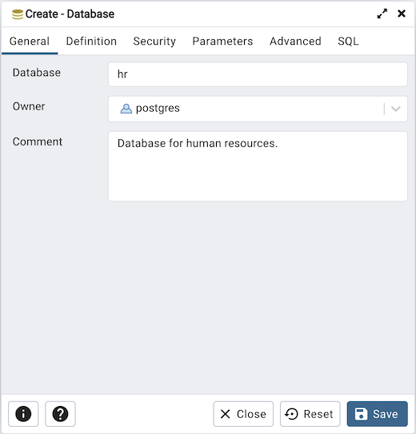
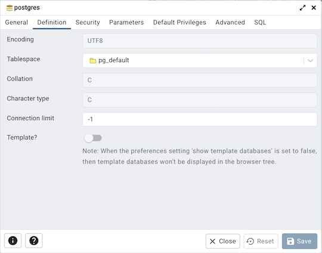
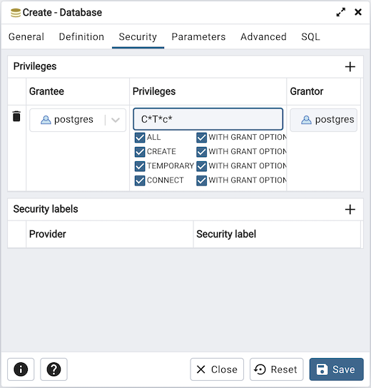
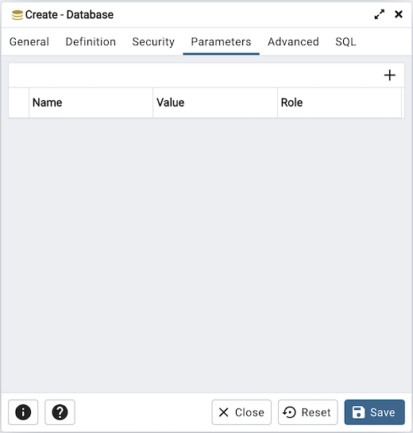
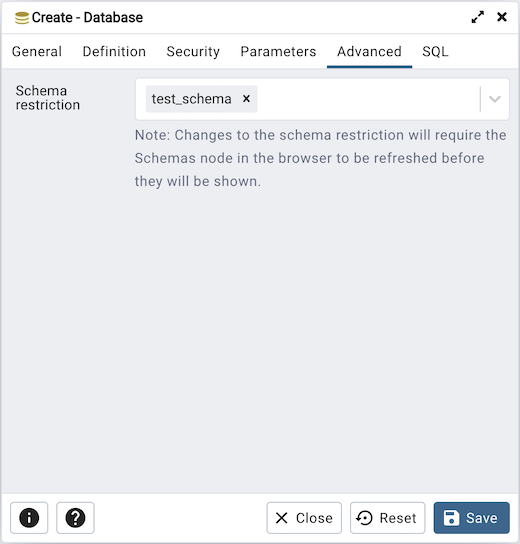
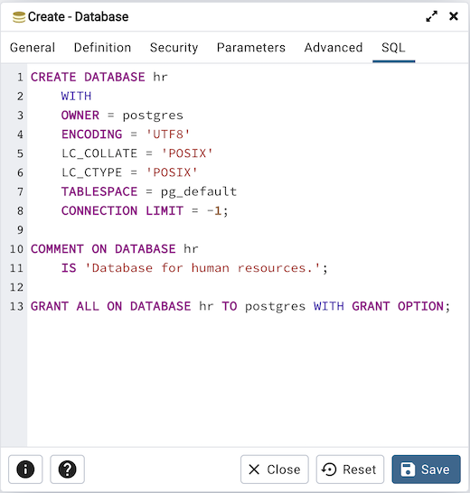

Database Dialog¶
Use the Database dialog to define or modify a database. To create a database, you must be a database superuser or have the CREATE privilege.
The Database dialog organizes the development of a database through the following dialog tabs: General, Definition, Security, and Parameters. The SQL tab displays the SQL code generated by dialog selections.
Use the fields in the General tab to identify the database:
Use the Database field to add a descriptive name for the database. The name will be displayed in the pgAdmin tree control.
Select the owner of the database from the drop-down listbox in the Owner field.
Store notes about the database in the Comment field.
Click the Definition tab to continue.
Use the Definition tab to set properties for the database:
Select a character set from the drop-down listbox in the Encoding field. The default is UTF8.
Select a template from the drop-down listbox in the Template field. If you do not specify a template, the database will use template1.
Select a tablespace from the drop-down listbox in the Tablespace field. The selected tablespace will be the default tablespace used to contain database objects.
Select the collation order from the drop-down listbox in the Collation field.
Select the character classification from the drop-down listbox in the Character Type field. This affects the categorization of characters, e.g. lower, upper and digit. The default, or a blank field, uses the character classification of the template database.
Specify a connection limit in the Connection Limit field to configure the maximum number of connection requests. The default value (-1) allows unlimited connections to the database.
If the templates? is set to true, then database will be a template database.
Click the Security tab to continue.
Use the Security tab to assign privileges and define security labels.
Use the Privileges panel to assign privileges to a role. Click the Add icon (+) to set privileges for database objects:
Select the name of the role from the drop-down listbox in the Grantee field.
Click inside the Privileges field. Check the boxes to the left of one or more privileges to grant the selected privilege to the specified user.
The current user, who is the default grantor for granting the privilege, is displayed in the Grantor field.
Click add to set additional privileges; to discard a privilege, click the trash icon to the left of the row and confirm deletion in the Delete Row popup.
Use the Security Labels panel to define security labels applied to the database. Click the Add icon (+) to add each security label selection:
Specify a security label provider in the Provider field. The named provider must be loaded and must consent to the proposed labeling operation.
Specify a a security label in the Security Label field. The meaning of a given label is at the discretion of the label provider. PostgreSQL places no restrictions on whether or how a label provider must interpret security labels; it merely provides a mechanism for storing them.
To discard a security label, click the trash icon to the left of the row and confirm deletion in the Delete Row popup.
Click the Parameters tab to continue.
Use the Parameters tab to set parameters for the database. Click the Add icon (+) to add each parameter:
Use the drop-down listbox in the Name field to select a parameter.
Use the Value field to set a value for the parameter.
Use the drop-down listbox next to Role to select a role to which the parameter setting specified will apply.
Follow these steps to add additional parameter value definitions; to discard a parameter, click the trash icon to the left of the row and confirm deletion in the Delete Row popup.
Click the Advanced tab to continue.
Use the Advanced tab to set advanced parameters for the database.
Use Schema restriction field to provide a SQL restriction that will be used against the pg_namespace table to limit the schemas that you see. For example, you might enter: public so that only public are shown in the pgAdmin browser.Separate entries with a comma or tab as you type.
Click the SQL tab to continue.
Your entries in the Database dialog generate a SQL command (see an example below). Use the SQL tab for review; revisit or switch tabs to make any changes to the SQL command.
Example¶
The following is an example of the sql command generated by user selections in the Database dialog:
The example creates a database named hr that is owned by postgres. It allows unlimited connections, and is available to all authenticated users.
Click the Info button (i) to access online help.
Click the Save button to save work.
Click the Close button to exit without saving work.
Click the Reset button to restore configuration parameters.